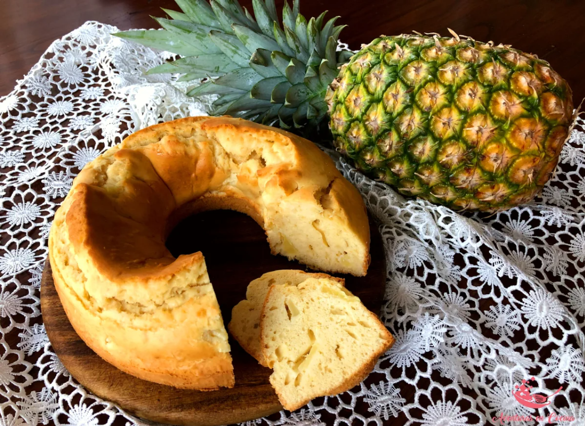

Este dulce es ideal para disfrutar solo o acompañado de queso fresco, y es perfecto para una merienda o un postre después de una comida.

Dulce de Piña
El dulce de piña es una deliciosa preparación que combina la frescura y dulzura natural de la piña con un toque de azúcar, creando un postre jugoso y refrescante. Perfecto para disfrutar en cualquier ocasión.